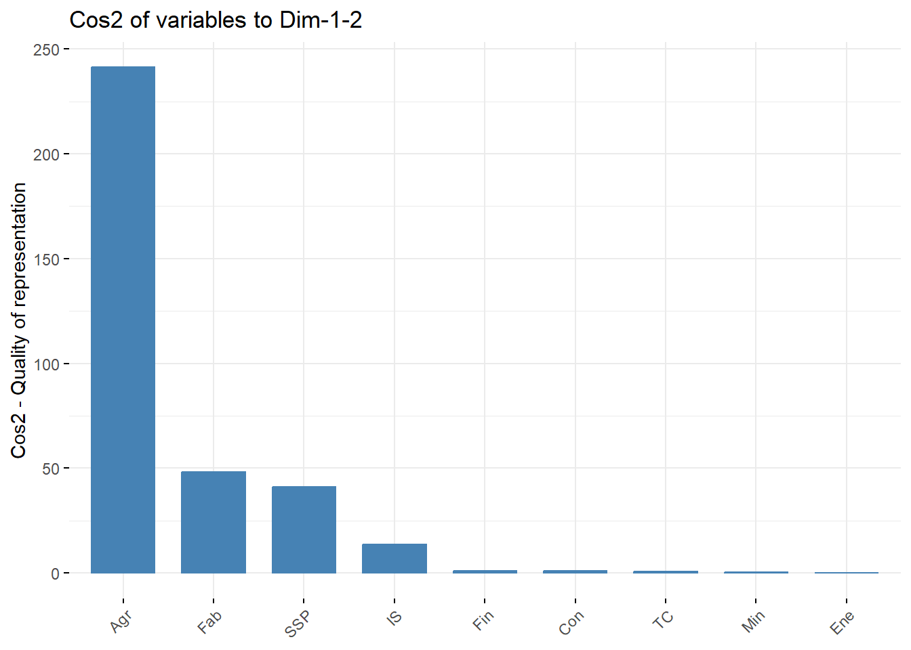
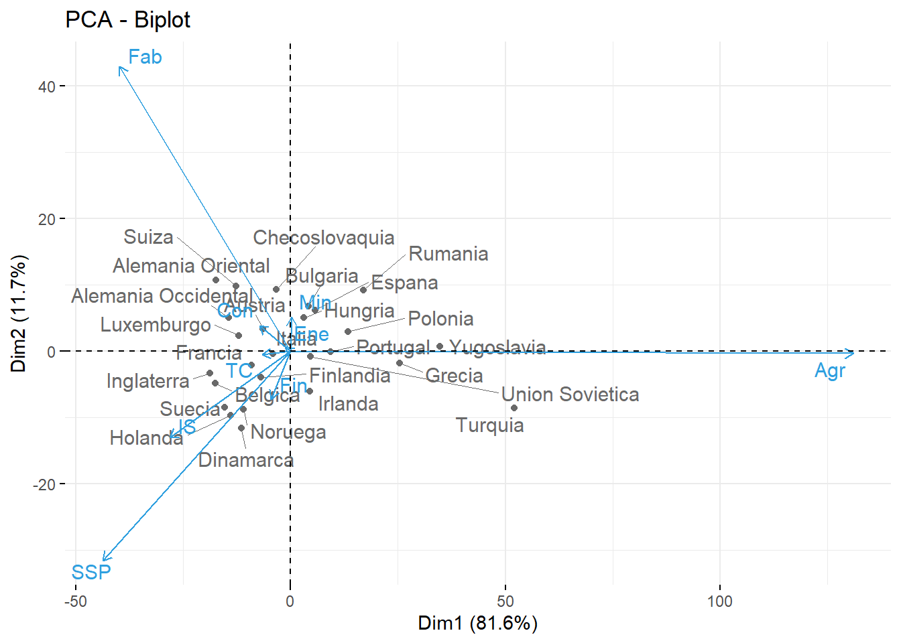

library(tidyverse)
library(ggplot2)
library(factoextra)
library(ggfortify)Entrega4_AD_PCA
Considera los datos europa.dat que están disponibles en Aula Digital. Los datos corresponden a los porcentajes de población empleados en diferentes actividades económicas en Europa para el año 1979. Las variables consideradas son: Agricultura, Minas, Fábricas, Suministro Eléctrico, Construcción, Industrias de Servicio, Finanzas, Servicios Sociales y Personales y, Transporte y Comunicaciones. Utiliza el método de componentes principales para reducir el número de variables, y tratar de determinar grupos de países con comportamientos semejantes en la distribución de su fuerza de trabajo. En este caso, usa la matriz de covarianza para el cálculo de las componentes principales, ya que todos los datos están medidos en la misma escala (porcentaje de la población) y por las caractersticas de los datos, no parece una buena idea considerarlos todos de igual manera.
Cargamos la tabla de datos:
datos = read.table("europa.dat", header = TRUE)
str(datos)'data.frame': 26 obs. of 9 variables:
$ Agr: num 3.3 9.2 10.8 6.7 23.2 15.9 7.7 6.3 2.7 12.7 ...
$ Min: num 0.9 0.1 0.8 1.3 1 0.6 3.1 0.1 1.4 1.1 ...
$ Fab: num 27.6 21.8 27.5 35.8 20.7 27.6 30.8 22.5 30.2 30.2 ...
$ Ene: num 0.9 0.6 0.9 0.9 1.3 0.5 0.8 1 1.4 1.4 ...
$ Con: num 8.2 8.3 8.9 7.3 7.5 10 9.2 9.9 6.9 9 ...
$ IS : num 19.1 14.6 16.8 14.4 16.8 18.1 18.5 18 16.9 16.8 ...
$ Fin: num 6.2 6.5 6 5 2.8 1.6 4.6 6.8 5.7 4.9 ...
$ SSP: num 26.6 32.2 22.6 22.3 20.8 20.1 19.2 28.5 28.3 16.8 ...
$ TC : num 7.2 7.1 5.7 6.1 6.1 5.7 6.2 6.8 6.4 7 ...head(datos) Agr Min Fab Ene Con IS Fin SSP TC
Belgica 3.3 0.9 27.6 0.9 8.2 19.1 6.2 26.6 7.2
Dinamarca 9.2 0.1 21.8 0.6 8.3 14.6 6.5 32.2 7.1
Francia 10.8 0.8 27.5 0.9 8.9 16.8 6.0 22.6 5.7
Alemania Occidental 6.7 1.3 35.8 0.9 7.3 14.4 5.0 22.3 6.1
Irlanda 23.2 1.0 20.7 1.3 7.5 16.8 2.8 20.8 6.1
Italia 15.9 0.6 27.6 0.5 10.0 18.1 1.6 20.1 5.7Consideramos el dataset en forma de matriz
X = as.matrix(datos)Calculamos las componentes
datos.acp=prcomp(datos, scale = FALSE, center = TRUE)
datos.acpStandard deviations (1, .., p=9):
[1] 17.4200491 6.6107228 3.8996608 2.3747336 1.5631376 1.0227575 0.6487274
[8] 0.2548071 0.0437262
Rotation (n x k) = (9 x 9):
PC1 PC2 PC3 PC4 PC5 PC6
Agr 0.891758406 -0.006826746 0.118466699 0.09676712 0.180043781 -0.15262561
Min 0.001922618 0.092347069 0.079379068 0.01015633 -0.001121643 0.45636121
Fab -0.271271411 0.770269221 0.184678991 0.01040077 0.335999746 -0.20093094
Ene -0.008388285 0.012015922 -0.006768322 -0.01814178 -0.002459689 0.23086414
Con -0.049594016 0.068988571 -0.077312766 0.08292614 -0.724262390 -0.55835746
IS -0.191798409 -0.234416513 -0.579612752 0.60760858 0.265863007 -0.02157242
Fin -0.031128614 -0.130082403 -0.469969939 -0.78119316 0.121062046 -0.05528170
SSP -0.298046310 -0.566777401 0.597745181 -0.04833726 0.235915950 -0.24786088
TC -0.045364280 -0.009888386 0.159415225 0.03783527 -0.434890328 0.54593853
PC7 PC8 PC9
Agr -0.091621401 0.068678066 -0.3354111
Min 0.766470364 0.290464275 -0.3239614
Fab -0.161983468 0.074117735 -0.3374633
Ene 0.062936752 -0.909183254 -0.3398982
Con 0.194294560 -0.004457936 -0.3253270
IS -0.087935421 0.104435658 -0.3366529
Fin -0.079976564 0.122754675 -0.3343621
SSP -0.004543731 0.052137300 -0.3323638
TC -0.567476088 0.223813567 -0.3342147Los valores propios muestran el porcentaje de varianza explicada por cada componente principal.
lambdas = get_eigenvalue(datos.acp)
lambdas eigenvalue variance.percent cumulative.variance.percent
Dim.1 3.034581e+02 81.578357771 81.57836
Dim.2 4.370166e+01 11.748274792 93.32663
Dim.3 1.520735e+01 4.088178743 97.41481
Dim.4 5.639360e+00 1.516023794 98.93084
Dim.5 2.443399e+00 0.656856714 99.58769
Dim.6 1.046033e+00 0.281204052 99.86890
Dim.7 4.208472e-01 0.113135967 99.98203
Dim.8 6.492666e-02 0.017454172 99.99949
Dim.9 1.911981e-03 0.000513996 100.00000Notemos que usando las 2 primeras componentes principales explican entre el 93.3% de los datos. Veamos el gráfico del codo:
fviz_eig(datos.acp, addlabels = TRUE, ylim=c(0,100))
Efectivamente, nos quedamos con 2 componentes principales.
Realicemos un gráfico de círculo de correlación variable para ver como se agrupan las variables y la calidad de representación de las varaibles
fviz_pca_var(datos.acp, axes = c(1,2), col.var = "contrib",
gradient.cols = c("#00AFBB", "#E7B800", "#FC4E07"),
repel = TRUE)
Observemos que la variable Agricultura queda muy bien representada por la primera componente principal. De la misma manera, observamos que las variables Fábricas y Servicios Sociales y Personales tambien estan bastante representadas. De las demás variables estan poco representadas.
Realicemos un gráfico de cos2 para corroborarlo
var <- get_pca_var(datos.acp)
fviz_cos2(datos.acp, choice = "var", axes = 1:2)
Efectivamente, las pres primeras variables tienen un cos2 alto, por tanto estas bien representadas. En cambio para las demás variables tiene un cos2 prácticamente nulo, indica que estas variables no estan bien representadas por las CPs.
Para ver como se relacionan las componentes principales con los datos originales, veamos los autovectores.
datos.acp$rotation PC1 PC2 PC3 PC4 PC5 PC6
Agr 0.891758406 -0.006826746 0.118466699 0.09676712 0.180043781 -0.15262561
Min 0.001922618 0.092347069 0.079379068 0.01015633 -0.001121643 0.45636121
Fab -0.271271411 0.770269221 0.184678991 0.01040077 0.335999746 -0.20093094
Ene -0.008388285 0.012015922 -0.006768322 -0.01814178 -0.002459689 0.23086414
Con -0.049594016 0.068988571 -0.077312766 0.08292614 -0.724262390 -0.55835746
IS -0.191798409 -0.234416513 -0.579612752 0.60760858 0.265863007 -0.02157242
Fin -0.031128614 -0.130082403 -0.469969939 -0.78119316 0.121062046 -0.05528170
SSP -0.298046310 -0.566777401 0.597745181 -0.04833726 0.235915950 -0.24786088
TC -0.045364280 -0.009888386 0.159415225 0.03783527 -0.434890328 0.54593853
PC7 PC8 PC9
Agr -0.091621401 0.068678066 -0.3354111
Min 0.766470364 0.290464275 -0.3239614
Fab -0.161983468 0.074117735 -0.3374633
Ene 0.062936752 -0.909183254 -0.3398982
Con 0.194294560 -0.004457936 -0.3253270
IS -0.087935421 0.104435658 -0.3366529
Fin -0.079976564 0.122754675 -0.3343621
SSP -0.004543731 0.052137300 -0.3323638
TC -0.567476088 0.223813567 -0.3342147Observemos que la primera componente principal da un peso muy elevado y positivo a la variable Agrucultura, y de signo contrario a las demás (excepto Mineria con un peso muy bajo).
Respecto a la segunda componente principal representa sobretodo a Fábrica y a Servicios Sociales y Personales.
fviz_pca_biplot(datos.acp, repel = TRUE,
col.var = "#2E9FDF", # color para las variables
col.ind = "#696969" # color para las observaciones
)
# Resultados por Variables
res.var=get_pca_var(datos.acp)
res.var$contrib # Contribuciones a las CP Dim.1 Dim.2 Dim.3 Dim.4 Dim.5 Dim.6
Agr 7.952331e+01 0.004660446 1.403435889 0.93638759 3.241576e+00 2.32945775
Min 3.696458e-04 0.852798119 0.630103643 0.01031511 1.258084e-04 20.82655520
Fab 7.358818e+00 59.331467329 3.410632975 0.01081761 1.128958e+01 4.03732430
Ene 7.036333e-03 0.014438239 0.004581018 0.03291243 6.050071e-04 5.32982493
Con 2.459566e-01 0.475942289 0.597726373 0.68767455 5.245560e+01 31.17630538
IS 3.678663e+00 5.495110161 33.595094217 36.91881834 7.068314e+00 0.04653693
Fin 9.689906e-02 1.692143168 22.087174349 61.02627458 1.465602e+00 0.30560660
SSP 8.883160e+00 32.123662232 35.729930152 0.23364906 5.565634e+00 6.14350149
TC 2.057918e-01 0.009778018 2.541321383 0.14315074 1.891296e+01 29.80488742
Dim.7 Dim.8 Dim.9
Agr 0.839448109 0.471667676 11.25006
Min 58.747681926 8.436949495 10.49510
Fab 2.623864396 0.549343859 11.38815
Ene 0.396103481 82.661418853 11.55308
Con 3.775037619 0.001987319 10.58377
IS 0.773263826 1.090680669 11.33352
Fin 0.639625083 1.506871025 11.17980
SSP 0.002064549 0.271829809 11.04657
TC 32.202911012 5.009251295 11.16995res.var$cos2 # Calidad de la representación Dim.1 Dim.2 Dim.3 Dim.4 Dim.5
Agr 241.31992128 0.002036692 0.2134254703 0.0528062660 7.920465e-02
Min 0.00112172 0.372686896 0.0958220945 0.0005817061 3.074001e-06
Fab 22.33092971 25.928833461 0.5186670459 0.0006100439 2.758496e-01
Ene 0.02135232 0.006309749 0.0006966517 0.0018560504 1.478274e-05
Con 0.74637540 0.207994659 0.0908983683 0.0387804425 1.281700e+00
IS 11.16320124 2.401454113 5.1089250596 2.0819850314 1.727071e-01
Fin 0.29404807 0.739494578 3.3588748940 3.4414912474 3.581051e-02
SSP 26.95667042 14.038572206 5.4335771274 0.0131763111 1.359906e-01
TC 0.62449189 0.004273156 0.3864677507 0.0080727853 4.621191e-01
Dim.6 Dim.7 Dim.8 Dim.9
Agr 0.0243668957 3.532794e-03 0.0003062381 0.0002150990
Min 0.2178526306 2.472380e-01 0.0054778292 0.0002006643
Fab 0.0422317426 1.104246e-02 0.0003566706 0.0002177392
Ene 0.0557517252 1.666991e-03 0.0536692953 0.0002208927
Con 0.3261144282 1.588714e-02 0.0000012903 0.0002023596
IS 0.0004867916 3.254259e-03 0.0007081425 0.0002166947
Fin 0.0031967457 2.691845e-03 0.0009783610 0.0002137557
SSP 0.0642630502 8.688597e-06 0.0001764900 0.0002112083
TC 0.3117689444 1.355251e-01 0.0032523394 0.0002135673# Resultados por observaciones
res.obs=get_pca_ind(datos.acp)
res.obs$coord #Coordenadas Dim.1 Dim.2 Dim.3 Dim.4 Dim.5
Belgica -17.516687 -4.92622849 -2.35528094 0.1940007 0.49072745
Dinamarca -11.496688 -11.66176637 3.00202830 -2.5328564 -0.26205034
Francia -9.128686 -2.16828207 -2.75030568 -0.1289183 0.37355869
Alemania Occidental -14.393424 5.04749385 0.20568951 -1.2143729 2.57857191
Irlanda 4.458174 -6.13156498 -1.92400082 3.4809060 0.34805906
Italia -4.026684 -0.38889529 -2.40586194 4.8100625 -0.24693944
Luxemburgo -12.089752 2.33236877 -4.62806669 1.9653471 -0.03246954
Holanda -13.900455 -9.72359023 -1.70981367 -0.6817669 -1.51095027
Inglaterra -18.728675 -3.33178946 0.58938403 -1.0073981 2.29959070
Austria -6.471418 3.35662962 -4.75660272 1.2741444 -0.51798957
Finlandia -6.837047 -3.97634061 0.06757235 -0.9640481 0.27383594
Grecia 25.427083 -1.80467718 -2.91613130 2.8567757 -1.87953959
Noruega -10.972019 -8.85877780 0.22621023 0.5923626 -2.00656646
Portugal 9.403865 -0.08570061 -1.23656256 2.1803190 0.06780428
Espana 5.774973 6.15867547 -4.87904446 -4.4809274 -3.04038851
Suecia -15.311975 -8.52674423 3.92210148 -2.6339347 1.41721975
Suiza -12.683839 9.77920054 -5.68921238 1.0438972 1.24534771
Turquia 52.115644 -8.64165980 2.96515501 1.7960412 3.17620617
Bulgaria 4.156791 6.70685051 4.93995679 0.1372004 0.56054055
Checoslovaquia -3.246127 9.23467980 3.78225558 0.1477919 -0.08257234
Alemania Oriental -17.415527 10.73233092 4.89564722 -0.2453801 1.36457552
Hungria 3.135737 4.98695108 2.98354179 0.7306784 -1.31541699
Polonia 13.315709 2.94482700 3.58894681 0.4854554 -1.36139215
Rumania 17.011336 9.12523022 2.58152423 -0.2380157 -0.03962236
Union Sovietica 4.587043 -0.87197041 8.44875566 -0.9788693 -2.93255455
Yugoslavia 34.832648 0.69274975 -6.94788580 -6.5884944 1.03241438
Dim.6 Dim.7 Dim.8 Dim.9
Belgica 0.58725632 -0.02747862 0.261512512 0.008040795
Dinamarca -1.00014269 0.16185051 0.113221471 -0.098177832
Francia -0.74062040 0.44855421 -0.072003249 0.002822468
Alemania Occidental -0.26124048 -0.38250268 0.114442694 0.043957458
Irlanda 0.53989717 0.35750610 -0.420871836 -0.072290598
Italia -1.50206770 0.24928213 0.051645913 -0.034174567
Luxemburgo 1.08490154 1.70709926 0.657656083 -0.021025084
Holanda -0.83583339 0.51429138 -0.273012947 0.066889344
Inglaterra 0.44287447 0.44816057 -0.272105619 0.033049026
Austria 0.83150513 -0.50543393 -0.255764025 0.015749373
Finlandia 0.68129276 -0.92797085 -0.279485018 -0.039399018
Grecia 0.59887931 -0.83983051 0.137603535 0.016322341
Noruega 1.41674308 -0.88213892 0.371151398 0.058993757
Portugal -1.03041185 -0.52381804 -0.075302827 -0.017535977
Espana -1.70355376 0.25749789 -0.039086940 0.039716393
Suecia -0.73494415 0.03745853 -0.024572541 0.018992003
Suiza -1.16079249 -1.25830466 0.004260537 -0.008689042
Turquia -0.36536971 0.05968267 0.116399862 0.058269133
Bulgaria -0.54824453 -0.22155473 0.184340613 0.023526405
Checoslovaquia 0.24180861 0.57988066 -0.123332326 0.065489414
Alemania Oriental 1.27464580 -0.43732622 0.146397327 -0.046067998
Hungria 1.88083050 0.57747180 -0.571402883 0.003437050
Polonia 0.32653024 0.66030520 0.017151170 0.008766194
Rumania -1.46062121 0.55746312 -0.026902957 -0.047287948
Union Sovietica -0.07846592 -0.62537794 0.198893703 -0.034657402
Yugoslavia 1.51514335 0.01523307 0.059166352 -0.044715689round(res.obs$contrib,7) #Contribuciones a las CP Dim.1 Dim.2 Dim.3 Dim.4 Dim.5
Belgica 3.8889453 2.1357866 1.4030024 0.0256687 0.3790643
Dinamarca 1.6752259 11.9689881 2.2793055 4.3754022 0.1080940
Francia 1.0561958 0.4137713 1.9130879 0.0113351 0.2196595
Alemania Occidental 2.6257665 2.2422310 0.0107003 1.0057753 10.4662405
Irlanda 0.2519080 3.3088070 0.9362320 8.2638311 0.1906945
Italia 0.2055053 0.0133105 1.4639100 15.7796833 0.0959872
Luxemburgo 1.8525191 0.4787659 5.4171667 2.6343615 0.0016595
Holanda 2.4489841 8.3211253 0.7393849 0.3170069 3.5936233
Inglaterra 4.4457188 0.9769759 0.0878557 0.6921482 8.3240236
Austria 0.5307950 0.9915979 5.7222489 1.1072205 0.4223517
Finlandia 0.5924681 1.3915407 0.0011548 0.6338613 0.1180356
Grecia 8.1944720 0.2866341 2.1507361 5.5660760 5.5607731
Noruega 1.5258119 6.9067920 0.0129419 0.2393162 6.3378114
Portugal 1.1208325 0.0006464 0.3867276 3.2421785 0.0072368
Espana 0.4226956 3.3381312 6.0206383 13.6940738 14.5509176
Suecia 2.9715998 6.3987514 3.8905467 4.7315872 3.1615977
Suiza 2.0390570 8.4165763 8.1861044 0.7432112 2.4412568
Turquia 34.4242210 6.5723865 2.2236569 2.2000341 15.8799666
Bulgaria 0.2190001 3.9588224 6.1719057 0.0128383 0.4945911
Checoslovaquia 0.1335546 7.5053759 3.6180514 0.0148970 0.0107325
Alemania Oriental 3.8441574 10.1371734 6.0616829 0.0410654 2.9310779
Hungria 0.1246255 2.1887642 2.2513200 0.3641241 2.7236990
Polonia 2.2472763 0.7632175 3.2576695 0.1607295 2.9174183
Rumania 3.6677923 7.3285224 1.6854869 0.0386374 0.0024712
Union Sovietica 0.2666819 0.0669164 18.0533784 0.6535010 13.5370618
Yugoslavia 15.3780364 0.0422359 12.2089503 29.6052825 1.6778005
Dim.6 Dim.7 Dim.8 Dim.9
Belgica 1.2680509 0.0069007 4.0512455 0.1300592
Dinamarca 3.6779448 0.2394034 0.7593836 19.3896495
Francia 2.0168455 1.8387896 0.3071198 0.0160251
Alemania Occidental 0.2509356 1.3371223 0.7758536 3.8869435
Irlanda 1.0717744 1.1680706 10.4930887 10.5125172
Italia 8.2958387 0.5679165 0.1580067 2.3493576
Luxemburgo 4.3277477 26.6329768 25.6213080 0.8892392
Holanda 2.5687434 2.4172449 4.4154005 9.0002993
Inglaterra 0.7211782 1.8355637 4.3861011 2.1971536
Austria 2.5422084 2.3346993 3.8750966 0.4989645
Finlandia 1.7066672 7.8699293 4.6272257 3.1225822
Grecia 1.3187422 6.4459282 1.1216640 0.5359299
Noruega 7.3801211 7.1117442 8.1602942 7.0009212
Portugal 3.9039386 2.5076277 0.3359125 0.6185902
Espana 10.6707015 0.6059677 0.0905038 3.1730921
Suecia 1.9860490 0.0128234 0.0357687 0.7255789
Suiza 4.9543931 14.4701748 0.0010753 0.1518752
Turquia 0.4908472 0.0325536 0.8026174 6.8299921
Bulgaria 1.1051721 0.4486051 2.0130088 1.1134077
Checoslovaquia 0.2149932 3.0731193 0.9010678 8.6275065
Alemania Oriental 5.9739326 1.7478864 1.2696088 4.2691533
Hungria 13.0071037 3.0476404 19.3414251 0.0237637
Polonia 0.3920379 3.9846630 0.0174257 0.1545842
Rumania 7.8443414 2.8401053 0.0428750 4.4982545
Union Sovietica 0.0226383 3.5742694 2.3433960 2.4162123
Yugoslavia 8.4408995 0.0021207 0.2073735 4.0221933round(res.obs$cos2,6) # Calidad de la representación Dim.1 Dim.2 Dim.3 Dim.4 Dim.5 Dim.6
Belgica 0.909565 0.071938 0.016444 0.000112 0.000714 0.001022
Dinamarca 0.464231 0.477658 0.031653 0.022533 0.000241 0.003513
Francia 0.863467 0.048715 0.078377 0.000172 0.001446 0.005684
Alemania Occidental 0.859474 0.105695 0.000176 0.006118 0.027584 0.000283
Irlanda 0.268539 0.507968 0.050015 0.163711 0.001637 0.003938
Italia 0.340109 0.003172 0.121413 0.485316 0.001279 0.047326
Luxemburgo 0.805705 0.029987 0.118070 0.021292 0.000006 0.006488
Holanda 0.656139 0.321064 0.009927 0.001578 0.007752 0.002372
Inglaterra 0.950613 0.030085 0.000941 0.002750 0.014331 0.000532
Austria 0.532302 0.143208 0.287576 0.020635 0.003410 0.008788
Finlandia 0.719485 0.243361 0.000070 0.014305 0.001154 0.007144
Grecia 0.963435 0.004853 0.012672 0.012161 0.005264 0.000534
Noruega 0.583776 0.380558 0.000248 0.001702 0.019525 0.009733
Portugal 0.920506 0.000076 0.015916 0.049483 0.000048 0.011052
Espana 0.261820 0.297768 0.186884 0.157630 0.072571 0.022783
Suecia 0.706123 0.218970 0.046329 0.020894 0.006049 0.001627
Suiza 0.546372 0.324783 0.109924 0.003701 0.005267 0.004576
Turquia 0.965539 0.026548 0.003126 0.001147 0.003586 0.000047
Bulgaria 0.197742 0.514777 0.279273 0.000215 0.003596 0.003440
Checoslovaquia 0.095304 0.771305 0.129385 0.000198 0.000062 0.000529
Alemania Oriental 0.679722 0.258135 0.053713 0.000135 0.004173 0.003641
Hungria 0.196399 0.496740 0.177797 0.010664 0.034561 0.070658
Polonia 0.879973 0.043039 0.063926 0.001170 0.009198 0.000529
Rumania 0.757901 0.218084 0.017454 0.000148 0.000004 0.005587
Union Sovietica 0.203927 0.007369 0.691823 0.009287 0.083349 0.000060
Yugoslavia 0.927013 0.000367 0.036882 0.033165 0.000814 0.001754
Dim.7 Dim.8 Dim.9
Belgica 0.000002 0.000203 0.0e+00
Dinamarca 0.000092 0.000045 3.4e-05
Francia 0.002085 0.000054 0.0e+00
Alemania Occidental 0.000607 0.000054 8.0e-06
Irlanda 0.001727 0.002393 7.1e-05
Italia 0.001303 0.000056 2.4e-05
Luxemburgo 0.016064 0.002384 2.0e-06
Holanda 0.000898 0.000253 1.5e-05
Inglaterra 0.000544 0.000201 3.0e-06
Austria 0.003247 0.000831 3.0e-06
Finlandia 0.013254 0.001202 2.4e-05
Grecia 0.001051 0.000028 0.0e+00
Noruega 0.003774 0.000668 1.7e-05
Portugal 0.002856 0.000059 3.0e-06
Espana 0.000521 0.000012 1.2e-05
Suecia 0.000004 0.000002 1.0e-06
Suiza 0.005377 0.000000 0.0e+00
Turquia 0.000001 0.000005 1.0e-06
Bulgaria 0.000562 0.000389 6.0e-06
Checoslovaquia 0.003041 0.000138 3.9e-05
Alemania Oriental 0.000429 0.000048 5.0e-06
Hungria 0.006661 0.006521 0.0e+00
Polonia 0.002164 0.000001 0.0e+00
Rumania 0.000814 0.000002 6.0e-06
Union Sovietica 0.003790 0.000383 1.2e-05
Yugoslavia 0.000000 0.000003 2.0e-06res.obs$cos2[1,1][1] 0.9095647datos$Agr [1] 3.3 9.2 10.8 6.7 23.2 15.9 7.7 6.3 2.7 12.7 13.0 41.4 9.0 27.8 22.9
[16] 6.1 7.7 66.8 23.6 16.5 4.2 21.7 31.1 34.7 23.7 48.7datos[1,] Agr Min Fab Ene Con IS Fin SSP TC
Belgica 3.3 0.9 27.6 0.9 8.2 19.1 6.2 26.6 7.2autoplot(datos.acp, data = datos, colour = 'Species',
loadings = TRUE, loadings.colour = 'blue',
loadings.label = TRUE, loadings.label.size = 3)